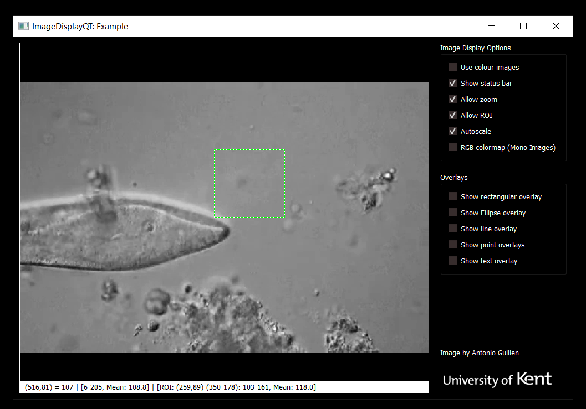

We've released ImageDisplayQT. This is an important part of our in-house GUI that we use with the various imaging and microscopy systems in my lab. Since we transitioned from LabVIEW to Python for our real-time systems, we were lacking a nice equivalent of LabVIEW's IMAQ image display that we could drop into our PyQt-based GUIs.
There were some ready-made options, such as the Matplotlib Qt backend and PyQtGraph. Matplotlib seemed slow when testing and really isn't designed for what we wanted to do - show live, video-rate images. PyQtGraph could have been a good choice, but in the end we went for our own, lightweight solution that was optimised for what we wanted.
ImageDisplayQT is a widget that you add to a PyQt GUI in the same way that you add any other widget. A single function call is then needed to display an image, and repeatedly calling that function (e.g. from a timer) updates it with the next image. We also added a status bar to display some information we care about, the ability to zoom in and out and pan (which turned out to be the hardest things to implement!), and to drag a ROI. Overlays can also easily be added.
More details and documentation: https://imagedisplayqt.readthedocs.io/
You can install it with:
pip install ImageDisplayQT
Or download it from GitHub (including an example GUI): https://github.com/MikeHughesKent/ImageDisplayQT
Video: https://www.youtube.com/watch?v=Yak7tegc_DI
